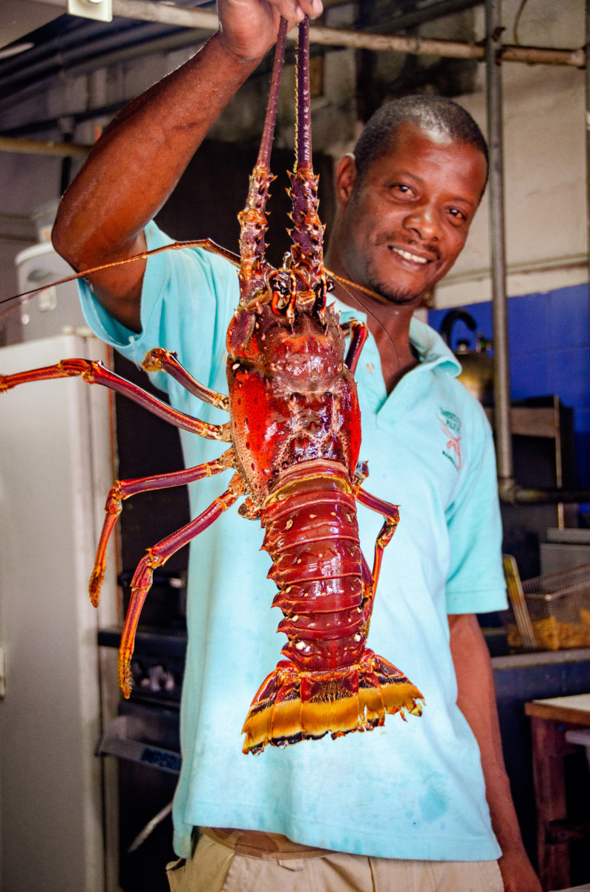
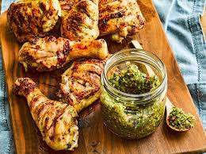
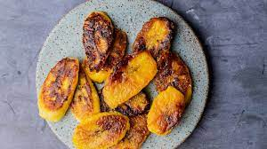

These are the Places I Like Best:
Barbados
- The people are very chill and welcoming
- They have pink sand beaches
- The food is delicious. They cook a fusion of Southern food with international influences. Some of my favorite Barbadian dishes are:
- Lobster tails

- Roasted chickens

- Plantain dishes

- My favorite place to stay is the Little Arches Hotel